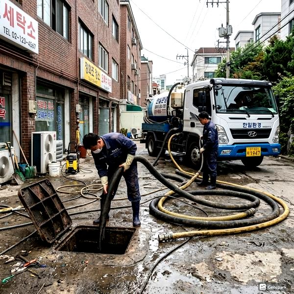
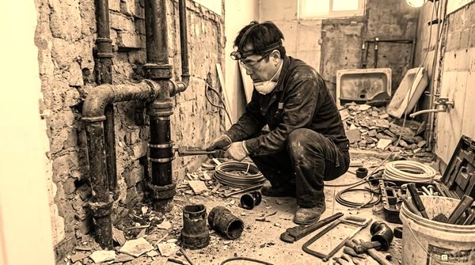
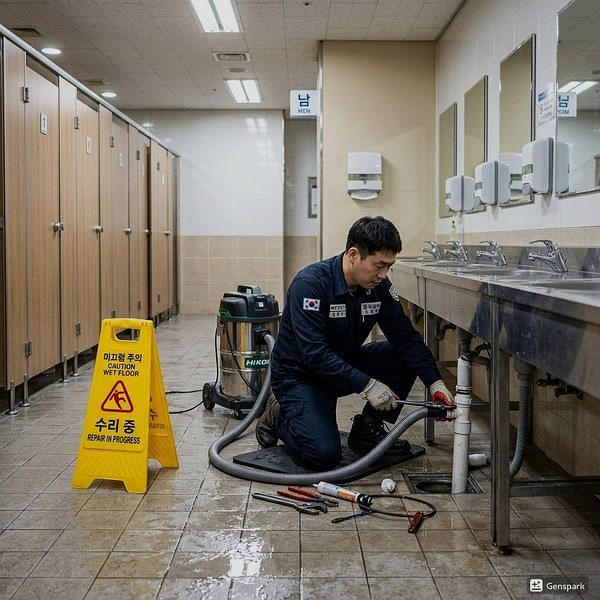

옥상 방수와 배수관 관리 - 누수 예방 필수 점검
2026년 4월 12일 | 제우스시설관리

옥상은 건물에서 가장 많은 비바람에 노출되는 곳입니다. 방수층이 노후되거나 배수관이 막히면 빗물이 건물 내부로 침투하여 심각한 누수 피해를 일으킵니다. 특히 장마철 전에 옥상 점검은 필수입니다.
옥상 배수관 막힘의 주원인은 낙엽과 이물질입니다. 가을철 낙엽이 배수구에 쌓여 물이 빠지지 않으면 옥상에 물이 고이고, 방수층에 지속적인 압력이 가해져 균열이 발생합니다. 계절마다 최소 1회 이상 옥상 배수구 청소가 필요합니다.

옥상 배수관은 일반 배관과 구조가 다릅니다. 건물 외벽을 따라 수직으로 내려오는 우수관은 고압세척기로 세척해야 합니다. 제우스시설관리는 150bar 이상의 고압세척기로 우수관 내부의 퇴적물을 완벽하게 제거합니다.
방수층 상태도 함께 점검해야 합니다. 우레탄 방수는 5~7년, 아스팔트 방수는 10~15년 주기로 재시공이 필요합니다. 방수층에 균열이나 부풀음이 보이면 즉시 보수해야 대형 누수 사고를 예방할 수 있습니다.

제우스시설관리는 옥상 배수관 청소부터 누수 원인 진단까지 종합적인 서비스를 제공합니다. 관로탐지기로 누수 지점을 정확히 찾아내고, 적절한 보수 방법을 제안합니다. 28분 내 출동, 전화: 010-4406-1788